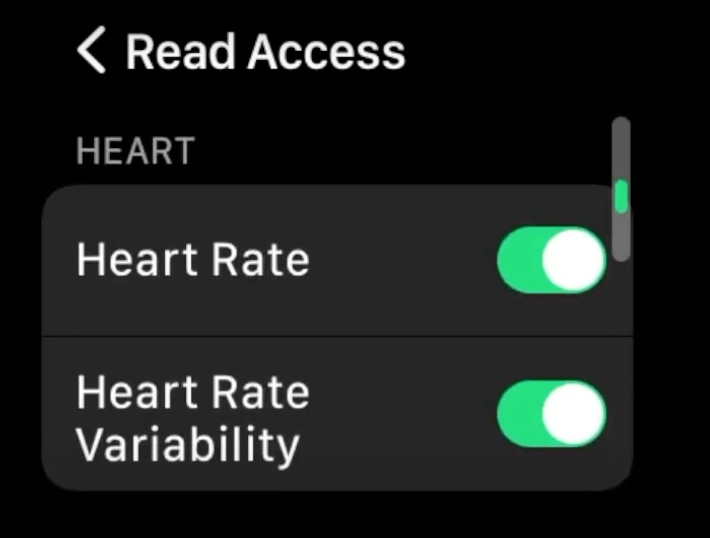
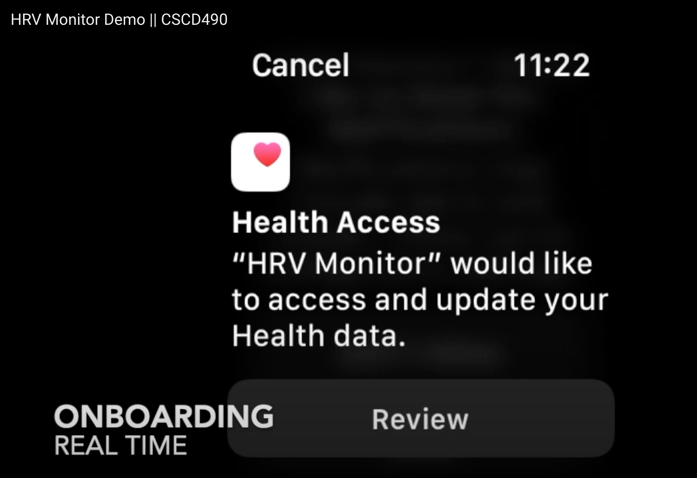
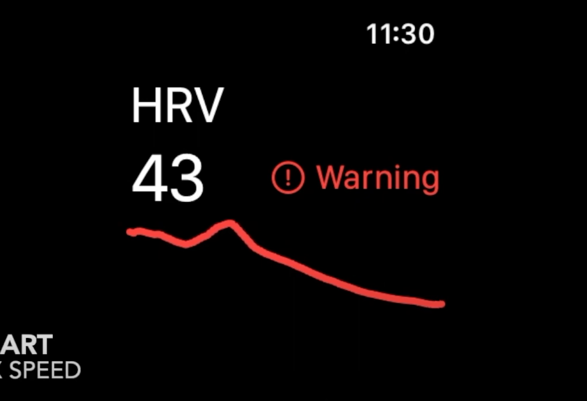
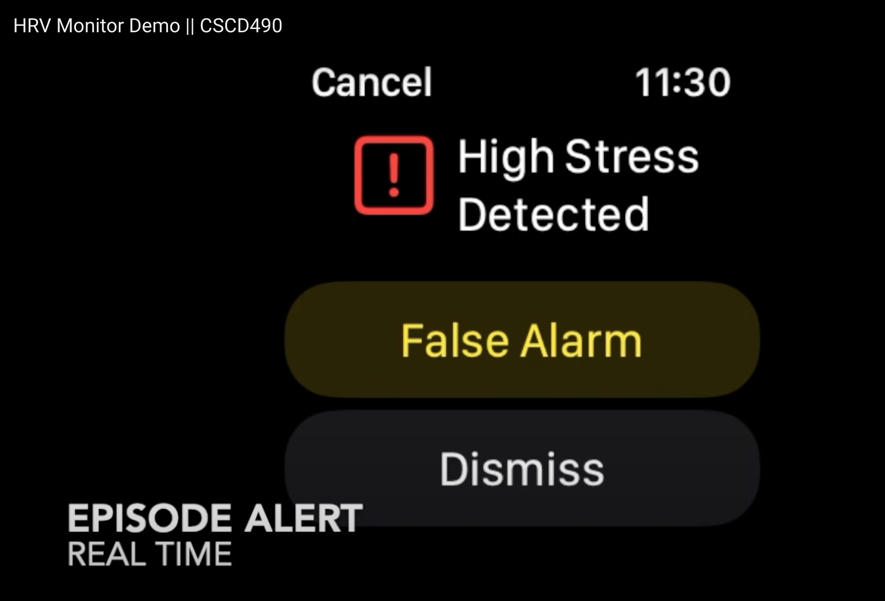
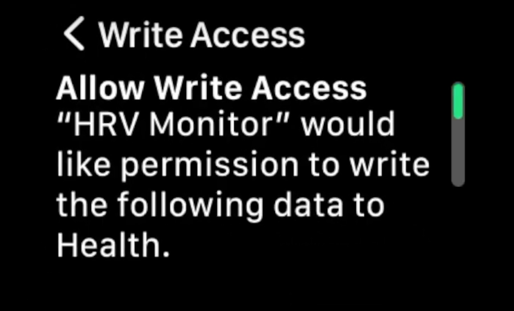

As a patient, I want to be able to set up the app without needing to input a lot of personal information so that I can save time.
As a health professional, I want a simple app setup process so that I can easily guide my patients in setting up the app.
As a patient, I want to find good online documentation on the app's usage so that I have an easily accessible resource if I need help or have questions.
As a health professional, I want to find good online documentation on the app's usage so that I can direct my patients to easily accessible resources if they need help or have questions.
As a health professional, I want to give my patient the ability to monitor their HRV such that they can know when variations occur. This will allow them to know when they need to follow the steps provided in their treatment plan.
As a patient, I want to be able to use common daily apps alongside HRV monitoring so the functionality of my watch is maximized and allows me to go about my daily life.
As a patient, I want to constantly monitor my HRV so I can know when a variation occurs causing a fight or flight response.
As a patient, I want to be able to choose when I want my HRV to be monitored so that I have control over when my data is being collected and as a means of preserving my device’s battery life.
As a patient, I want to know clearly what the application is going to do with my data so that I understand the necessity and the reasoning behind permitting me to use and collect my health data. I want to be able to decide what data I share and with whom to protect my health data.
As a health professional, I want to know clearly what the application is going to do with my patients’ data so that I can assure my patients of the necessity of and reasoning.